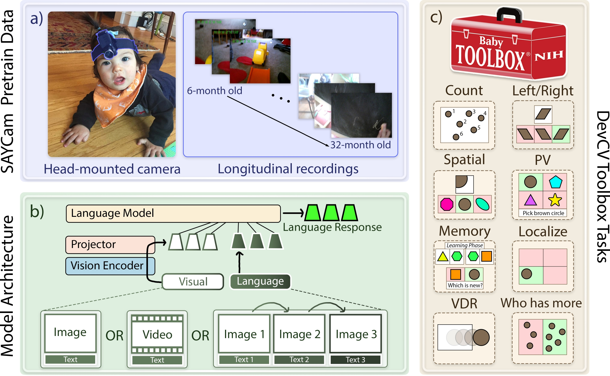
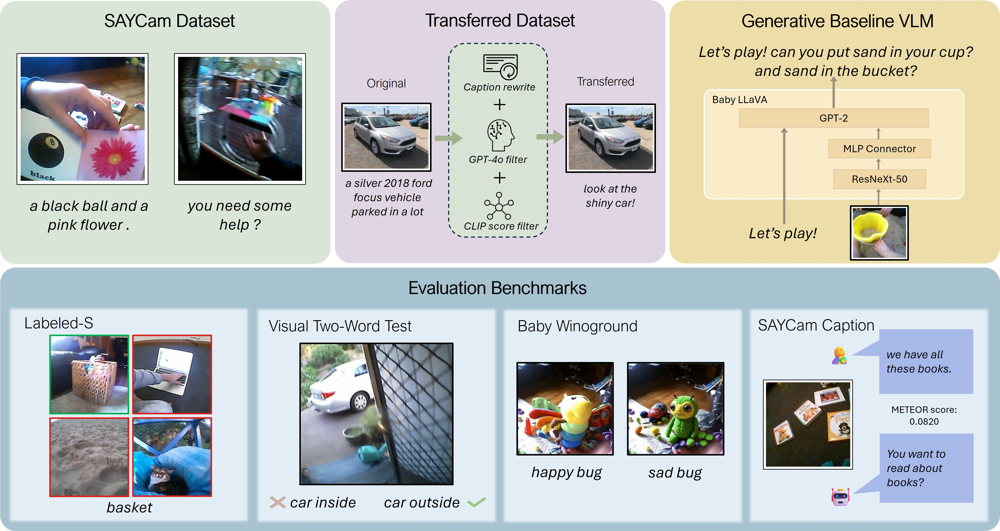
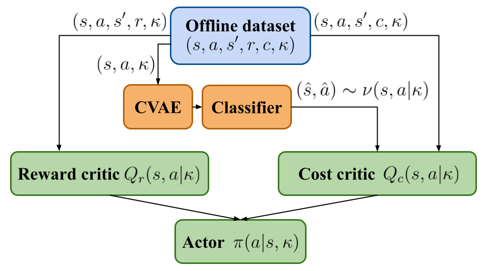
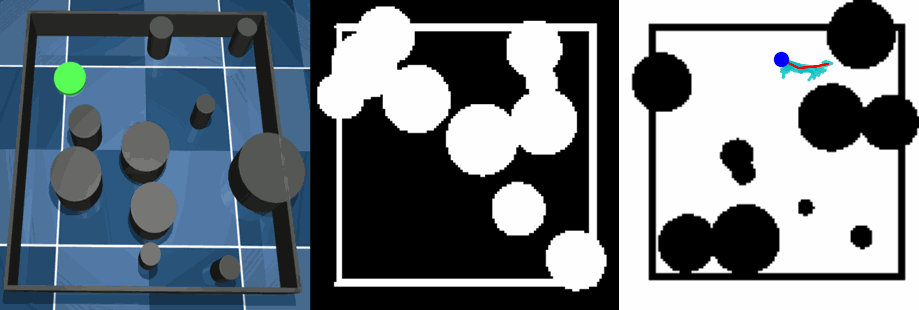
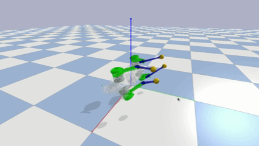

|
ShengAo (Shawn) Wang Hi! I'm ShengAo Wang (王声傲), also known as Shawn, a Ph.D. student majoring in System Engineering at Boston University, co-advised by Prof. Boqing Gong and Prof. Venkatesh Saligrama. Previously, I earned my M.S. degree in Robotics from University of Michigan, Ann Arbor, B.E. degree in Mechatronics from Zhejiang University, where I also minored in ACEE at the Chu Kochen Honors College. I was also fortunate to work as an Algorithm Engineer at Alibaba DAMO Academy. I'm broadly interested in applying solid deep learning principles to real-world engineering challenges, particularly in embodied AI and multimodal learning, with an emphasis on efficiency and safety. Currently, I'm developing a small-scale VLM learning pipeline designed to learn efficiently in a way that parallels early human development. I'm actively looking for research internship positions during summer 2026, please feel free to contact me!
Email: wsashawn[at]bu[dot]edu |
{kind=link}
News
|
Industry Experience |
|
Alibaba DAMO Academy
Autonomous Driving Algorithm Engineer Aug. 2022 - Apr. 2023 |
|
|
Inceptio Technology
Autonomous Driving Algorithm Intern Mar. 2021 - Aug. 2021 |
Selected Publications |
|

|
BabyVLM-V2: Toward Developmentally Grounded Pretraining and Benchmarking of Vision Foundation Models
Shengao Wang, Wenqi Wang, Zecheng Wang, Max Whitton, et al. [click to show] Under Review, 2025 project page / paper A full upgrade of BabyVLM, equipped with more diverse and developmentally grounded training data, a more comprehensive benchmark suite, and stronger baseline models with additional video modality input. |
|

|
BabyVLM: Data-Efficient Pretraining of VLMs Inspired by Infant Learning
Shengao Wang, Arjun Chandra, Aoming Liu, Venkatesh Saligrama, Boqing Gong ICCV, 2025 project page / paper / code A Vision Language Model (VLM) training playground built from scratch and deeply grounded in developmental psychology. |
|

|
Constraint-Conditioned Actor-Critic for Offline Safe Reinforcement Learning
Zijian Guo, Weichao Zhou, Shengao Wang, Wenchao Li ICLR, 2025 paper / code An offline safe RL method that learns adaptive, constraint-aware policies and handles out-of-distribution scenarios, outperforming prior approaches on DSRL benchmarks. |
Other Projects |
|  |
World Modeling with Normalizing Flow
Jan. 2022 - Aug. 2022 A stochastic world model with hierarchical normalizing flows learned from MuJoCo trajectory data with tactile inputs. MPPI planning is applied for robot control in mobile and rope-manipulation tasks. |

|
Risk-Aware Autonomous Vehicle Trajectory Planning with MCTS and DQN
Mar. 2021 - Aug. 2021 A risk-aware trajectory planner demo for autonomous vehicles using Monte Carlo Tree Search (MCTS) and Deep Q-Networks (DQN) in a highway driving simulator, integrating uncertainty estimation to achieve aggressive/conservative driving policies. |
|  |
Quadruped Robot Fall Recovery with CMAES and PPO
Jul. 2019 - Jun. 2020 A learning-based quadruped robot gait control agent, pretrained with Behavior Cloning using trajectory data generated by Covariance Matrix Adaptation Evolution Strategy (CMAES), further improved by Proximal Policy Optimization (PPO). It achieves 80% success rate for fall-recovery task in PyBullet simulator. |
Service
|
HobbyI love music (all kinds of genres)! You might bump into me playing the saxophone or chilling in a livehouse. My second dream job is being a street musician who brings joy to people around me :-) |